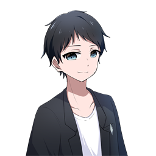

「ちょっとだけ使いたい」に、ちょうどいいツールを。
本格的な作業をするなら、専用のソフトを使うのが一番です。でも、ちょっとした加工や変換のためだけにソフトを購入したり、インストールしたりするほどではないこともあります。
YOS Toolsは、そんな「簡単なことだけ、手軽に、安心してやりたい」という場面のための無料ブラウザツール集です。
多機能さや専門性を追求するのではなく、日常でちょっと必要になる機能に絞って、シンプルに使えることを大切にしています。
入力・読み込みしたデータは、原則として外部へ送信せず、利用者のブラウザ内で処理します。
それでもWeb上でファイルを扱うのが気になる場合は、ソースコードを公開しているGitHubからYOS Tools一式をダウンロードし、完全ローカル環境で使用することもできます。
専用ソフトを使うほどではない。
でも、ちょっとだけやりたい。
YOS Toolsは、その「ちょっと」のための道具箱です。
TOOLS
ABOUT
YOS Tools ／ 作者：夢生ツムグ ／ 開発補助：Claude Code（Anthropic）
YOS Toolsは、夢生ツムグが個人で制作・公開しているブラウザツール群です。作者が制作したソースコード・デザイン・文章等の権利は、特に記載のない限り夢生ツムグに帰属します。
YOS Toolsは、個人・法人、営利・非営利を問わず自由に利用できます。
ただし、YOS Toolsおよびそのソースコードの再配布・転載・自作発言、およびそれらを目的とした複製・改変は禁止します。
公開されたソースコードは、学習・技術的な参考として自由に閲覧できます。得られた一般的な知識や技術を自身の制作に活用することも問題ありません。
GitHub上での閲覧・Fork等については、GitHubの利用規約・ポリシーに従います。
アイコン・画像・フォント・ライブラリ等には第三者が権利を有するものが含まれます。これらには各権利者の利用条件が適用され、素材の抽出・転載・再配布等を本規約によって許可するものではありません。
入力・読み込みしたデータは、特に記載のない限り外部へ送信されず、ブラウザ内で処理されます。
一部ツールでは設定やデータの保存に localStorage を使用します。ブラウザデータの削除等により保存内容が失われる場合があるため、必要なデータは各自でバックアップしてください。
なお、GitHub Pages等の外部サービスによってアクセス情報等が取得される場合があります。
YOS Toolsは個人制作のツールであり、現状のまま（AS IS）提供されます。動作やデータの保持等を保証するものではありません。
利用は自己責任とし、本ツールの利用または利用不能によって生じた損害について、作者は責任を負いません。
本規約は必要に応じて変更される場合があります。